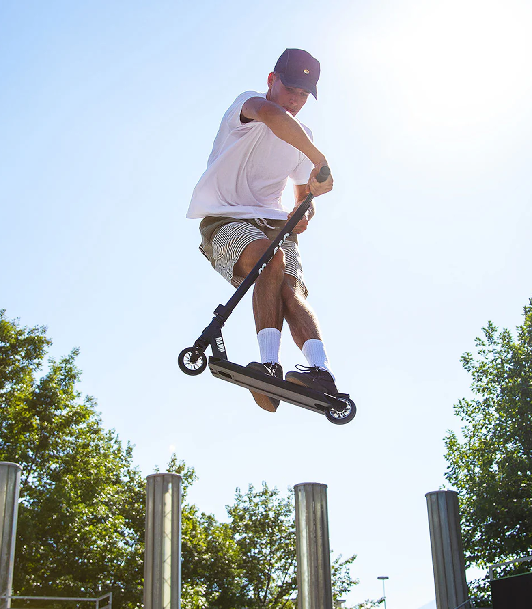

Что такое барспин?
Барспин — это трюк, в котором райдер отпускает руль и заставляет его вращаться вокруг центральной оси на 360°, а затем ловит и стабильно приземляется. Этот трюк отлично смотрится как в флете, так и на трамплинах или гранях.
